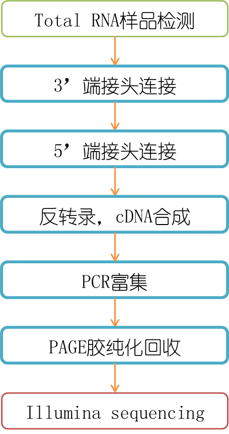

重要结果汇总
1.该项目鉴定到的已知miRNA成熟体（mature）和前体（hairpin）的个数分别为：
| {{each|safe}} |
2.该项目预测到的novel miRNA成熟体（mature）和前体（hairpin）的个数分别为：
| {{each|safe}} |
3.每个差异比较组合差异（DIFF）miRNA个数，以及上调（UP）、下调（DOWN）的miRNA个数分别为：
| {{each|safe}} |
一、建库测序流程
从RNA样品到最终数据获得，样品检测、建库、测序每一个环节都会对数据质量和数量产生影响，而数据质量又会直接影响后续信息分析的结果。为了从源头上保证测序数据的准确性、可靠性，诺禾致源对样品检测、建库、测序每一个生产步骤都严格把控，从根本上确保了高质量数据的产出。流程图如下：

1 Total RNA样品检测
{% if flag_exosome %}诺禾致源对外泌体类样本采用高灵敏Agilent 2100 pic600 精确检测RNA的总量和片段分布
{% else %}诺禾致源对RNA样品的检测主要包括4种方法：
(1) 琼脂糖凝胶电泳分析RNA降解程度以及是否有污染
(2) Nanodrop检测RNA的纯度（OD260/280比值）
(3) Qubit对RNA浓度进行精确定量
(4) Agilent 2100精确检测RNA的完整性
{% endif %}2 文库构建
样品检测合格后，使用Small RNA Sample Pre Kit构建文库，利用Small RNA的3’及5’端特殊结构（5’端有完整的磷酸基团，3’端有羟基），以total RNA为起始样品，直接将Small RNA两端加上接头，然后反转录合成cDNA。随后经过PCR扩增，PAGE胶电泳分离目标DNA片段，切胶回收得到的即为cDNA文库。 构建原理图如下：
3 库检
文库构建完成后，先使用Qubit2.0进行初步定量，稀释文库至1ng/ul，随后使用Agilent 2100对文库的insert size进行检测，insert size符合预期后，使用Q-PCR方法对文库的有效浓度进行准确定量（文库有效浓度 ＞2nM），以保证文库质量。
4 上机测序
库检合格后，把不同文库按照有效浓度及目标下机数据量的需求pooling后进行HiSeq/MiSeq测序。
二、生物信息分析流程
{% if flag_plant and flag_ref and flag_diff %}
鉴于该物种是植物，且有参考基因组，采用植物small RNA有参分析流程，示意图如下：
鉴于该物种是植物，且无参考基因组，采用植物small RNA无参分析流程，示意图如下：
鉴于该物种是动物，且有参考基因组，采用动物small RNA有参分析流程，示意图如下：
鉴于该物种是动物，且无参考基因组，采用动物small RNA无参分析流程，示意图如下：

鉴于该物种是植物，且有参考基因组，采用植物small RNA有参分析流程，示意图如下：
鉴于该物种是植物，且无参考基因组，采用植物small RNA无参分析流程，示意图如下：

鉴于该物种是动物，且无参考基因组，采用动物small RNA无参分析流程，示意图如下：
三、结果展示及说明
{{html_raw_order}} 原始序列数据
高通量测序（如illumina HiSeqTM2500/MiSeq等测序平台）测序得到的原始图像数据文件经碱基识别（Base Calling）分析转化为测序序列（Sequenced Reads），我们称之为Raw Data或Raw Reads，结果以FASTQ（简称为fq）文件格式存储，其中包含测序序列（reads）的序列信息以及其对应的测序质量信息。
FASTQ格式文件中每个read由四行描述，如下：
@HWI-ST1276:71:C1162ACXX:1:1101:1208:2458 1:N:0:CGATGT
NAAGAACACGTTCGGTCACCTCAGCACACTTGTGAATGTCATGGGATCCAT
+
#55???BBBBB?BA@DEEFFCFFHHFFCFFHHHHHHHFAE0ECFFD/AEHH
其中第一行以“@”开头，随后为Illumina 测序标识别符(Sequence Identifiers)和描述文字(选择性部分)；第二行是碱基序列；第三行以“+”开头，随后为illumina 测序标识符(选择性部分)；第四行是对应序列的测序质量(Cock et al.)。
Illumina测序标识符详细信息如下：
| 标示符 | 含义 |
|---|---|
| HWI-ST1276 | Instrument – unique identifier of the sequencer |
| 71 | run number – Run number on instrument |
| C1162ACXX | FlowCell ID – ID of flowcell |
| 1 | LaneNumber – positive integer |
| 1101 | TileNumber – positive integer |
| 1208 | X – x coordinate of the spot. Integer which can be negative |
| 2458 | Y – y coordinate of the spot. Integer which can be negative |
| 1 | ReadNumber - 1 for single reads; 1 or 2 for paired ends |
| N | whether it is filtered - NB：Y if the read is filtered out, not in the delivered fastq file, N otherwise |
| 0 | control number - 0 when none of the control bits are on, otherwise it is an even number |
| CGATGT | Illumina index sequences |
第四行中每个字符对应的ASCII值减去33，即为对应第二行碱基的测序质量值。如果测序错误率用e表示，illumina HiSeqTM2500/MiSeq的碱基质量值用Qphred表示，则有下列关系：
公式一： Qphred = -10log10(e)
illumina Casava 1.8版本测序错误率与测序质量值简明对应关系如下：
| 测序错误率 | 测序质量值 | 对应字符 |
|---|---|---|
| 5% | 13 | . |
| 1% | 20 | 5 |
| 0.1% | 30 | ? |
| 0.01% | 40 | I |
{{html_qc_order}} 测序数据质量评估
{{html_qc_order}}.1 测序错误率分布检查
每个碱基测序错误率是通过测序Phred数值（Phred score，Qphred）通过公式1转化得到，而Phred 数值是在碱基识别（Base Calling）过程中通过一种预测碱基判别发生错误概率模型计算得到的，对应关系如下表所显示。
illumina Casava 1.8版本碱基识别与Phred分值之间的简明对应关系如下表：
| Phred分值 | 不正确的碱基识别 | 碱基正确识别率 | Q-sorce |
|---|---|---|---|
| 10 | 1/10 | 90% | Q10 |
| 20 | 1/100 | 99% | Q20 |
| 30 | 1/1000 | 99.9% | Q30 |
| 40 | 1/10000 | 99.99% | Q40 |
测序错误率与碱基质量有关，受测序仪本身、测序试剂、样品等多个因素共同影响。对于RNA-seq技术，测序错误率分布具有两个特点：
(1) 测序错误率会随着测序序列（Sequenced Reads）长度的增加而升高，这是由于测序过程中化学试剂的消耗而导致的，并且为Illumina高通量测序平台都具有的特征（Erlich and Mitra，2008；Jiang et al.，2011）。
(2) 前几个碱基的位置也会发生较高的测序错误率，是因为在RNA-seq建库过程中反转录需要随机引物，推测前几个碱基测序错误率较高的原因是随机引物碱基和RNA模版的不完全结合（Jiang et al.，2011）。
测序错误率分布检查用于检测在测序长度范围内，有无测序错误率异常的碱基位置。一般情况下，每个碱基位置的测序错误率都应该低于0.5%。
项目结果见下图：
-
{% for each in figure_error %}
图{{figure_qc_order}}.1 测序错误率分布图
横坐标为reads的碱基位置，纵坐标为单碱基错误率
{{html_qc_order}}.2 测序数据质量情况汇总
样品测序产出原始数据质量评估情况详见表{{table_qc_order}}.1。
表{{table_qc_order}}.1 数据产出质量情况一览表
| Sample | Reads | Bases | Error rate | Q20 | Q30 | GC content |
|---|---|---|---|---|---|---|
| {{each.1}} | {{each.2}} | {{each.3}} | {{each.4}} | {{each.5}} | {{each.6}} | {{each.7}} |
注：
(1) Sample：样品id。
(2) Reads：统计原始序列数据，以四行为一个单位，统计每个测序文件的测序序列的个数。
(3) Bases：测序序列的个数乘以测序序列的长度，并转化为以G为单位。
(4) Error rate：指测序错误率，通过公式一计算得到。
(5) Q20：Phred数值大于20的碱基占总体碱基的百分比。
(6) Q30：Phred数值大于30的碱基占总体碱基的百分比。
(7) GC content：计算碱基G和C的数量总和占总体碱基数量的百分比。
{{html_qc_order}}.3 测序数据过滤
测序得到的raw reads，里面含有带接头的、低质量的reads，为了保证信息分析的质量，必须对raw reads进行处理，得到clean reads。
数据处理的步骤如下：
(1) 去除低质量 reads（质量值 sQ <= 5 的碱基数占整个 read 的 50％以上的 reads）；
(2) 去除 N（N 表示无法确定碱基信息）的比例大于 10%的 reads；
(3) 去除有5’接头污染的reads；
(4) 去除没有3’接头序列和插入片段的reads；
(5) trim掉3’接头序列；
(6) 去除polyA/T/G/C的reads（大部分连续的polyA/T/G/C，可能来源于测序错误，且信息熵低，可以不做分析）。
Small RNA测序的接头信息：
RNA 5’ Adapter (RA5), part：
5’-GTTCAGAGTTCTACAGTCCGACGATC-3’
RNA 3’ Adapter (RA3), part：
5’-AGATCGGAAGAGCACACGTCT-3’
表{{table_qc_order}}.2 数据过滤情况一览表
| Sample | total reads | N% > 10% | low quality | 5 adapter contamine | 3 adapter null or insert null | with ployA/T/G/C | clean reads |
|---|---|---|---|---|---|---|---|
| {{each.1}} | {{each.2}} | {{each.3}} | {{each.4}} | {{each.5}} | {{each.6}} | {{each.7}} | {{each.8}} |
注：
(1) Sample：样品id。
(2) total_reads：统计原始序列数据条数。
(3) N% > 10%：因 N含量超过10%，过滤掉的reads数及其占总raw reads数的比例。
(4) low quality：因低质量，过滤掉的reads数及其占总raw reads数的比例。
(5) 5_adapter_contamine：因含有5’接头，过滤掉的reads数及其占总raw reads数的比例。
(6) 3_adapter_null or insert_null：因没有3’接头或没有插入片段，过滤掉的reads数及其占总raw reads数的比例。
(7) with ployA/T/G/C：因含有ployA/T/G/C，过滤掉的reads数及其占总raw reads数的比例。
(8) clean reads：最终得到的clean reads数及其占总raw reads数的比例。
{{html_qc_order}}.4 sRNA长度筛选
对各样品的clean reads，筛选一定长度范围内的sRNA来进行后续分析。以下是对这些小RNA（sRNA）的种类（用uniq表示）及数量（用total表示）【见表{{table_qc_order}}.3】，并对sRNA做长度分布统计【见图{{figure_qc_order}}.2】。一般来说，动物sRNA的长度区间为18~35nt，植物sRNA的长度区间为18~30，长度分布的峰能帮助我们判断sRNA的种类，如miRNA集中在21~22nt，siRNA集中在24nt等。
表{{table_qc_order}}.3 sRNA种类和数量情况一览表
| Sample | Total reads | Total bases (bp) | Uniq reads | Uniq bases (bp) |
|---|---|---|---|---|
| {{each.1}} | {{each.2}} | {{each.3}} | {{each.4}} | {{each.5}} |
注：
(1) Sample：样品id。
(2) Total reads：sRNA的总数。
(3) Total bases (bp)：sRNA的总长度。
(4) Uniq reads：sRNA的种类。
(5) Uniq bases (bp)：各种sRNA的总长度。
-
{% for each in figure_lenFilter %}
图{{figure_qc_order}}.2 所得total sRNA片段的长度分布统计
横坐标为reads的长度，纵坐标为该长度的reads所占的比例。
{% if flag_exosome %}
长度分布Q&A
| 问：外泌体small RNA 在21-22bp比列偏低的原因： |
| 答：主要是因为外泌体样本的特殊性，其中含有大量的其他RNA的降解片段，这些片段的片段长度多集中在30-32nt，造成reads片段在30-32nt含量偏高。 |
{{html_qc_order}}.5 公共及特有序列分析
统计两样品间公共序列和特有序列的种类（用uniq表示）及数量（用total表示）分布情况，【见图{{figure_qc_order}}.3】。
-
{% for each in figure_seqVenn_total %}
图{{figure_qc_order}}.3.1公共及特有序列统计(Total sRNA)
-
{% for each in figure_seqVenn_uniq %}
图{{figure_qc_order}}.3.2公共及特有序列统计(Uniq sRNA)
注：
(1) 样本1 specific：样本1的特有序列。
(2) 样本1 & 样本2：样本间的公共序列。
(3) 样本2 specific：样本2的特有序列。
{{html_map_order}} 参考序列比对分析
用bowtie将长度筛选后的sRNA定位到参考序列上，分析small RNA在参考序列上的分布情况（后面的sRNA分类是针对这些mapped sRNA）。
表{{table_map_order}}.1 与参考基因组比对信息统计表
| Sample | Total sRNA | Mapped sRNA | "+" Mapped sRNA | "-" Mapped sRNA |
|---|---|---|---|---|
| {{each.0}} | {{each.1}} | {{each.2}} | {{each.3}} | {{each.4}} |
注：
(1) Sample：样品id。
(2) Total sRNA：经分析2.4“sRNA长度筛选”后，各个样本所得到的总reads数。
(3) Mapped sRNA：该样本reads中能mapped到参考序列的reads数及所占百分比。
(4) “+” Mapped sRNA：该样本reads中能mapped到参考序列方向相同链的reads数及所占百分比。
(5) “-” Mapped sRNA：该样本reads中能mapped到参考序列方向相反链的reads数及所占百分比。
{%if flag_ref %}
对各个样品所有比对到基因组上各条染色体的reads进行密度统计，用circos作图查看每条染色体上reads的分布情况。无染色体时，选择前10条contigs或scaffolds进行分析。
-
{% for each in figure_map %}
图{{figure_map_order}}.1 各染色体reads分布密度图
图中最外圈是选择展示的各条染色体；中间的灰色背景区是抽取其中了10000条reads的分布情况，红色mapping到正链，蓝色到负链；最里面的圆圈区是比对到该染色体上的所有reads，橘黄色为正链coverage分布，绿色为负链coverage分布，超过所有coverage集均值+3倍标准差的奇异点将被舍弃。
{% endif %}{{html_known_order}} 已知miRNA分析
将上述mapped到参考序列上的reads，与miRBase中指定范围序列进行比对，得到各样品匹配上的sRNA的详细情况，包括匹配上的已知miRNA的二级结构，各样本中miRNA的序列、长度、出现的次数等信息。miRNA在由前体发育为成熟体时其过程是由Dicer酶切完成的，酶切位点的特异性使得miRNA成熟体序列首位碱基具有很强的偏向性，因此还进行了不同长度miRNA的首位点碱基分布，另外还有miRNA的各位点碱基分布统计。
项目结果见如下图表：
注：结题报告中只显示部分已知miRNA分析结果，完整的信息包含在结果文件夹4.Known_miRNA中。
表{{table_known_miRNA_order}}.1 各样本已知miRNA比对情况统计表
| {{each|safe}} |
注：
(1) Mapped mature：指比对上的miRNA成熟体。第2列为所有的样本总共匹配上的miRNA成熟体个数；第3到第n+2列分别为样本1到n配上的miRNA成熟体个数。
(2) Mapped hairpin：指比对上的miRNA前体。第2列为所有的样本总共匹配上的miRNA前体个数；第3到第n+2列分别为样本1到n匹配上的miRNA前体个数。
(3) Mapped uniq sRNA：指比对上的sRNA的种类。第2列为所有的样本总共匹配到已知miRNA前体的sRNA的种类；第3到第n+2列分别为样本1到n匹配到已知miRNA前体的sRNA的种类。
(4) Mapped total sRNA：指比对上的sRNA的个数。第2列为所有的样本总共匹配到已知miRNA前体的sRNA的个数；第3到第n+2列分别为样本1到n匹配到已知miRNA前体的sRNA的个数。
图{{figure_known_order}}.1 部分匹配上的已知miRNA的二级结构（示意图）
整个序列是miRNA前体，红色突出部分为成熟体序列所在
表{{table_known_miRNA_order}}.2 匹配上的已知miRNA的表达情况（部分）
注：
第1列：miRNA成熟体id；第2到n+1列是样本1到n匹配到该成熟体的sRNA的个数（readcount）。
匹配上已知miRNA的sRNA的细节情况展示（详解见下图)
{% for each in known_mrd %}
{{each|safe}}
{% endfor %}
图{{figure_known_order}}.2 sRNA与miRNA匹配信息示例图（蓝色文字为注解）
-
{% for each in figure_known_bias1 %}
图{{figure_known_order}}.3 长度18~30nt的已知miRNA首位碱基偏好性
横坐标为miRNA长度，纵坐标为该长度miRNA中首位碱基出现A/U/C/G的百分率（柱形图上方的数值为该长度miRNA的总条数）
-
{% for each in figure_known_bias2 %}
图{{figure_known_order}}.4 已知miRNA各位碱基偏好性
横坐标为miRNA的碱基位置，纵坐标为该位置miRNA中出现碱基A/U/C/G的百分率
已知miRNA分析Q&A
| 问：已知miRNA鉴定时mismatch是几个？ |
| 答：0个，不允许错配。 |
{{html_ncRNA_order}} ncRNA分析
若有该物种ncRNA注释信息，就用该物种ncRNA序列来注释所测得的sRNA。若没有，则选取Rfam中的rRNA、tRNA、snRNA、snoRNA来注释测序所得的sRNA。尽可能的发现并去除其中可能的rRNA、tRNA、snRNA、snoRNA。
表{{table_ncRNA_order}}.1 比对上的ncRNA分类统计表
注：第1列：Types，指ncRNA类型；第2到n+1列是样本1到n匹配到该种类型ncRNA的sRNA的个数（readcount）。
{{html_repAna_order}} 重复序列比对
若有该物种重复序列/转座子注释信息，则用其重复序列信息来注释所测得的sRNA。若没有，就根据参考序列信息来进行重复序列的从头预测，并将sRNA与重复序列进行比对。尽可能的发现并去除其中可能的repeat序列，并统计了比对上各种repeat类型的小RNA（sRNA）种类（用uniq表示）及sRNA数量（用total表示）。
Repeat分类统计情况如图{{figure_repAna_order}}.1和图{{figure_repAna_order}}.2。
-
{% for each in figure_repAna1 %}
图{{figure_repAna_order}}.1 Total repeat reads 分类统计图
-
{% for each in figure_repAna2 %}
图{{figure_repAna_order}}.2 Uniq repeat reads 分类统计图
{{html_NAT_order}} 植物NAT-siRNA检测
Natural Antisense Transcripts（NAT）是指可以跟其他转录本互补形成RNA双链的编码或非编码RNA序列。根据它们在基因组上的相对位置不同，NAT可以分为两类：cis-NAT和trans-NAT。cis-NAT是指来自于跟有义链转录本同一个基因组座位不同染色体链的序列；trans-NAT是指跟它的互补序列来自于染色体上的不同位置的转录本。NAT-siRNA目前在植物中研究较多，PlantNATsDB（http://bis.zju.edu.cn/pnatdb/; Chen et al., 2011）是针对60几种动植物的基因组进行了NAT预测，构建而成的数据库。对于PlantNATsDB数据库中存在的物种，我们直接用数据库中该物种的NAT基因来进行NAT-siRNA的检测，若没有，就采用PlantNATsDB的分析方法来进行NAT基因从头预测，进而再进行NAT-siRNA检测。
表{{table_NAT_order}}.1 比对上NAT基因的sRNA分类统计表
注：（“+”表示与NAT基因方向相同，“-”表示与NAT基因方向相反）
第一列：Types，指NAT类型；第2到n+1列是样本1到n匹配到该种类型NAT的sRNA的个数（readcount）。
{{html_gene_order}} 外显子、内含子比对
将sRNA比对到mRNA的外显子和内含子，找出来自mRNA降解片段的sRNA。
表{{table_gene_order}}.1 匹配内含子、外显子的sRNA数量统计
注：
第一列：Types，分4种类型进行的统计。分别是“exon：+”代表与mRNA的外显子区方向相同，“exon：-”代表与mRNA的外显子区方向相反，“intron：+”代表与mRNA的内含子区方向相同，“intron：-”代表与mRNA的内含子区方向相反。
第2到n+1列是样本1到n匹配到该种类型的sRNA的个数（readcount）。
外显子、内含子比对Q&A
| 问：为什么要与外显子和内含子比对，外显子不是mRNA的来源吗？ |
| 答：我们测序得到的sRNA有可能有来自mRNA的降解片段，做这部分分析一方面是为了尽可能的注释上测序得到的reads，另一方面是为了在新miRNA预测之前去除这些基因来源的序列，基因来源的序列一般可能是基因降解的产物，这些区域较基因intergenic区能预测出miRNA的相对较少，为了排除干扰，对这部分序列目前采取的是直接去掉的方式。 |
{{html_novel_order}} 新miRNA预测
miRNA前体的标志性发夹结构，能够用来预测新的miRNA。我们整合miREvo（Wen et al.，2012）和mirdeep2（Friedlander et al.，2011）这些miRNA预测软件来进行新miRNA的分析，基本原理是通过截取一定长度sRNA比对上的参考序列，通过探寻其二级结构及Dicer酶切位点信息、能量等特征进行分析，预测样品中novel miRNA，并进行各样本中匹配上的sRNA的序列、长度、出现的次数等信息，以及不同长度miRNA的首位点碱基分布和所有miRNA的各位点碱基分布情况的统计。
项目结果见如下图表：
注：结题报告中只显示部分novel miRNA分析结果，完整的信息包含在结果文件夹中。
表{{table_novel_miRNA_order}}.1 预测的新miRNA及各样本sRNA与之比对情况统计表
注：
(1) Mapped mature：指预测到的成熟体。第二列为总共预测到的成熟体的数目；第3到第n+2列分别为样本1到n上检测的成熟体体的数目。
(2) Mapped star: 预测到的miRNA * 链。第二列为总共预测到的*链的数目；第3到第n+2列分别为样本1到n上检测的*链的数目。
(3)Mapped hairpin: 指预测到的前体。第二列为总共预测到的前体的数目；第3到第n+2列分别为样本1到n上检测的前体的数目。
(2) Mapped uniq sRNA：指比对上前体的sRNA的种类。第2列为所有的样本总共匹配到新miRNA前体的sRNA的种类；第3到第n+2列分别为样本1到n匹配到新miRNA前体的sRNA的种类。
(3) Mapped total sRNA：指比对上前体的sRNA的个数。第2列为所有的样本总共匹配到新miRNA前体的sRNA的个数；第3到第n+2列分别为样本1到n匹配到新miRNA前体的sRNA的个数。

图{{figure_novel_miRNA_order}}.1 部分预测的新miRNA的二级结构（示意图）
整个序列是miRNA前体，红色突出部分为成熟体序列所在
表{{table_novel_miRNA_order}}.2 匹配上的新miRNA的表达情况（部分）
注：
第一列：miRNA成熟体id；第2到n+1列是样本1到n匹配到该成熟体的sRNA的个数（readcount）。
匹配上novel miRNA的reads的细节情况展示（详解，见图{{figure_known_order}}.2）
{% for each in novel_mrd %}
{{each|safe}}
{% endfor %}
-
{% for each in figure_novel_bias1 %}
图{{figure_novel_miRNA_order}}.2 长度18~30nt的新miRNA首位碱基偏好性
横坐标为miRNA长度，纵坐标为该长度sRNA中首位碱基出现A/U/C/G的百分率（柱形图上方的数值为该长度miRNA的总条数）
-
{% for each in figure_novel_bias2 %}
图{{figure_novel_miRNA_order}}.3 新miRNA各位碱基偏好性
横坐标为miRNA的碱基位置，纵坐标为该位置miRNA中出现碱基A/U/C/G的百分率
{{html_TAS_order}} 植物ta-siRNA检测
ta-siRNA是植物中发现的一类 siRNA 基因（TAS），它在植物生长发育过程中发挥重要调控功能，目前已在水稻、拟南芥中有相关报道。TAS基因分析，一方面，以水稻和拟南芥的已知TAS基因为数据库进行同源比对；另一方面，运用ta-siRNA识别软件UEA sRNA tools（Moxon et al., 2008）来进行的TAS基因预测。
表{{table_TAS_order}}.1 比对上TAS基因的sRNA统计表
注：（“+”表示与TAS基因方向相同，“-”表示与TAS基因方向相反）
第一列：Types，指TAS类型；第2到n+1列是样本1到n匹配到该种类型TAS的sRNA的个数（readcount）。
{{html_category_order}} sRNA分类注释统计
对所有small RNA与各类RNA的比对、注释情况进行总结。由于存在一个sRNA同时比对上几种不同的注释信息的情况，为了使每个unique sRNA有唯一的注释，按照known miRNA > rRNA > tRNA > snRNA > snoRNA > repeat{% if flag_NAT %} > NAT-siRNA{% endif %}{% if flag_gene %} > gene{% endif %} > novel miRNA{% if flag_TAS %} > ta-siRNA{% endif %}检测的优先级顺序将small RNA遍历。分类注释结果中的rRNA总量可以作为一个样品的质控标准：一般情况下质量较好的动物样品中rRNA总量所占比例应低于40%，植物样品中的rRNA总量所占比例应低于60%。
表{{table_category_order}}.1 比对上的sRNA分类统计表
注：
> total：指各样品比对到参考序列的sRNA数量，后面都是以它为参照，来计算各类sRNA所占的比例。
> known_miRNA：指各样本比对到已知miRNA的sRNA的数量及所占比例。
> rRNA/tRNA/snRNA/snoRNA：指各样本分别比对到rRNA/tRNA/snRNA/snoRNA的sRNA的数量及所占比例。
{% if flag_repeat %}
> repeat：指各样本比对到repeat的sRNA的数量及所占比例。
{% endif %}
{% if flag_NAT %}
> NAT：指各样本比对到NAT基因的sRNA的数量及所占比例。
{% endif %}
> novel_miRNA：指各样本比对到新miRNA的sRNA的数量及所占比例。
{% if flag_TAS %}
> TAS：指各样本比对到TAS基因的sRNA的数量及所占比例。
{% endif %}
{% if flag_gene %}
> exon：+/exon：-/intron：+/intron：- ：指个样本比对到exon/intron正、负链的数量及所占比例。
{% endif %}
> other：指各样本比对到参考序列，但没有比对到已知miRNA、ncRNA{% if flag_repeat %}、repeat{% endif %}、{% if flag_NAT %}NAT、{% endif %}新miRNA{% if flag_TAS %}、TAS{% endif %}{% if flag_gene %}以及基因外显子、内含子区{% endif %}的sRNA的数量及所占比例。
sRNA分类注释统计Q&A
| 问：外泌体small RNA中known_miRNA比例偏低的原因: |
| 答：主要是由于外泌体样本的特殊性造成的。建库富集的RNA中其中含有大量的其他RNA的降解片段，所以分类注释结果中lncRNA降解片段（other），mRNA降解片段（exon，intron）比列偏高，所以已知 miRNA的比例偏低仅有10%左右。 |
{{html_edit_order}} miRNA碱基编辑分析
microRNA可能发生部分位置碱基的编辑，导致种子序列改变，进而使得作用靶基因发生改变。通过各样本sRNA与检测到的已知、新miRNA成熟体及其前体进行序列间的比对，来找出可能发生了碱基突变编辑的miRNA。
结果详细描述如下：
pre-miRNA行：miRNA前体名称、能比对上该前体的reads总数、发生碱基编辑的reads数、后者/前者百分比；
matrue miRNA：miRNA成熟体名称（在该前体上），能比对上该成熟体的reads总数、发生碱基编辑的reads数、后者/前者百分比；
site[1-n]起下面几行代表该成熟体位点n上的碱基编辑情况。site行，各列分别代表该位点发生碱基编辑的reads数、及其占比对上该成熟体reads数的百分比。随后几行是具体碱基编辑信息，例如该位点发生U到G的突变，突变发生的reads数，及其占比对上该成熟体reads数的百分比。
{% for each in edit %}
{{each|safe}}
{% endfor %}
注：结题报告中只显示部分miRNA碱基编辑分析结果，更多信息见结果文件夹。
{{html_family_order}} miRNA家族分析
对检测到的已知miRNA和新miRNA进行家族分析，探索其所属的miRNA家族在其他物种中的存在情况。结果表格中第一列是miRBase数据库中收录的各个物种名，第一行是检测到的已知和新miRNA前体的家族名，表格中的数据项“+”表示在该物种中存在对应家族，“-”表示不存在。结果见表{{table_family_order}}.1。
表{{table_family_order}}.1 miRNA家族分析结果（部分）
注：结题报告中只显示部分miRNA家族分析统计结果，更多信息见结果文件夹。
miRNA家族分析Q&A
| 问：miRNA家族是什么？确定miRNAs属于一个miRNA家族的依据是什么?？ |
| 答：一般来讲，来源于同一个家族的miRNA，通常预测它们调控特定的生物学途径。假如一组miRNA，它们在2~7这些位点（这几个位点是作用靶基因的种子位点）表现为一致的保守型，就会被定义为一个miRNA家族。序列相似性比对，是最为简单直接的方法。 |
{{html_diff_order}} miRNA表达及差异分析
{{html_diff_order}}.1 miRNA表达水平分析
对各样本中已知和新miRNA进行表达量的统计，并用TPM（Zhou et al.，2010）进行表达量归一化处理。
公式：归一化表达量=(readCount*1,000,000)/libsize (libsize：样品miRNA readcount之和)
表{{table_diff_order}}.1 miRNA表达水平统计表（部分）
注：结题报告中只显示部分miRNA表达水平统计结果，完整信息见结果文件夹。
(1) 第1列——“miRNA”，代表 miRNA成熟体id。
(2) 第2到n+1列——“样本名”，分别代表样本1到n的readcount。
(3) 第n+2到2n+1列——“样本名(TPM)”，分别代表样本1到n的readcount经TPM normalization后的值。
miRNA表达水平分析Q&A
| 问：用于miRNA表达定量的TPM与转录组中的FPKM有何区别？ |
| 答：FPKM和TPM都是对数据归一化的方法，这两个统计量表达的意义是不一样的。 FPKM(expected number of Fragments Per Kilobase of transcript sequence per Millions base pairs sequenced)是每百万fragments中来自某一基因每千碱基长度的fragments数目，其同时考虑了测序深度和基因长度对fragments计数的影响。 TPM（transcripts per million reads）=(readCount*1,000,000)/total_ readCount，TPM不用考虑Small RNA长度，因为测序所得sRNA片段，其实是一个完整的sRNA tags。不像转录组一条reads可能是基因的一部分，所以基因的表达量用reads来统计就必须进行基因长度的归一化。 |
{{html_diff_order}}.2 miRNA表达量TPM密度分布图
TPM密度分布能整体检查样品的基因表达模式，项目结果见图{{figure_diff_order}}.1。

图{{figure_diff_order}}.1 TPM密度分布图
横坐标为miRNA的log10(TPM+1)值，纵坐标为对应log10(TPM+1)的密度
{{html_diff_order}}.3 样品间相关性检查
样品间基因表达水平相关性是检验实验可靠性和样本选择是合理性的重要指标。相关系数越接近1，表明样品之间表达模式的相似度越高。若样品中有生物学重复，通常生物重复间相关系数要求较高。
项目结果见图{{figure_diff_order}}.2
-
{% for each in figure_cor %}
图{{figure_diff_order}}.2 样品间miRNA表达量相关性示意图
横坐标与纵坐标分别为为样品的log10（TPM+1）(R2：pearson相关系数的平方; Rho:spearman相关系数；Tau：kendall-tau相关系数)
{{html_diff_order}}.4 miRNA差异表达分析结果
miRNA差异表达的输入数据为miRNA表达水平分析中得到的readcount数据。对于有生物学重复的样品，分析我们采用基于负二项分布的DESeq2（Michael et al.，2014）进行分析；对于无生物学重复的样品，先采用TMM对readcount数据进行标准化处理，之后用DEGseq（Wang et al.，2010）进行差异分析。
差异分析的部分结果示意见表{{table_diff_order}}.2。
结题报告中只显示一组比较的miRNA差异表达分析部分结果，完整信息见结果文件夹14DiffExprAnalysis/14.4DiffExprAnalysis。
表{{table_diff_order}}.2 miRNA表达差异分析结果（部分）
注：
(1) sRNA: miRNA成熟体id。
(2) Group1：校正后样品1的read count值。
(3) Group2：校正后样品1的read count值。
(4) log2.Fold_change.：log2(Sample1/Sample2)。
(5) p.value：p值。
(6) q.value.Storey.et.al..2003.：校正后的pvalue，qvalue越小，表示miRNA表达差异越显著。
{{html_diff_order}}.5 差异miRNA筛选
用火山图可以推断差异miRNA的整体分布情况，从差异倍数(Fold change)和校正后的显著水平（padj/qvalue）两个水平进行评估，对差异miRNA进行筛选。
当样品有生物学重复时，默认差异miRNA的筛选条件为：padj<0.05。
当样品无生物学重复时，差异miRNA数目会偏多，为了控制假阳性率，需qvalue结合foldchange来筛选，默认差异miRNA筛选条件为：qvalue<0.01 && | log2(foldchange)|>1。
项目结果见图{{figure_diff_order}}.3：
-
{% for each in figure_volcano %}
图{{figure_diff_order}}.3 差异miRNA火山图
横坐标代表miRNA在不同实验组中/不同样品中表达倍数变化，纵坐标代表miRNA表达量变化的统计学显著程度，图中的散点代表各个miRNA，蓝色圆点表示无显著性差异的miRNA，红色圆点表示显著上调的差异miRNA，绿色圆点表示显著下调的差异miRNA
{{html_diff_order}}.6 差异miRNA聚类分析
差异miRNA聚类分析用于判断不同实验条件下差异miRNA表达量的聚类模式。 每个比较组合都会得到一个差异miRNA集，将所有比较组合的差异miRNA集的并集在每个实验组/样品中的的TPM值，用于层次聚类分析（结果见图{{figure_diff_order}}.4），K-means聚类分析和SOM聚类分析（见结果文件夹）。

图{{figure_diff_order}}.4 差异miRNA聚类图
上图为整体层次聚类图，以log10（TPM+1）值进行聚类，红色表示高表达miRNA，蓝色表示低表达miRNA
差异miRNA聚类分析Q&A
| 问：聚类分析是怎么做的？ |
| 答：根据小RNA的表达量进行的聚类，通过log10（TPM+1）进行计算，是为了判断不同实验条件下差异miRNA表达量的聚类模式。聚类使用的为R中的聚类软件包pheatmap,所针对的数据为union_for_cluster(差异miRNA的并集),以miRNA的相对表达水平值log2(ratios) 进行聚类。其采用相应的距离算法,算出每个miRNA之间的距离,然后通过反复迭代,计算miRNA之间的相对距离,最后根据miRNA的相对距离远近来分成不同的subcluster,从而实现聚类。该软件包是免费的,只需通过R来运行。H-cluster、K-means和SOM 都是聚类的方法,均采用的是R语言相关代码和函数实现的,也有一些免费的软件可以做这些聚类分析,例如gene_cluster等。 |
| 问：为什么进行聚类分析? |
| 答：聚类分析用于判断差异miRNA在不同实验条件下的表达模式,将表达模式相同或相近的miRNA聚集成类,进而识别未知miRNA的功能或已知miRNA的未知功能,这些同类miRNA可能具有相似的功能。 |
{{html_diff_order}}.7 差异miRNA维恩图
当比较组合数大于等于2个小于等于5个时，可以将各组比较得到的差异miRNA个数进行统计，画成维恩图，直观展现出各个比较组合共有的及特有的差异miRNA数目(如果只有两个样品时，则进行两个样本之间的venn 图绘制）（见图{{figure_diff_order}}.5）。
-
{% for each in figure_venn %}
图{{figure_diff_order}}.5 差异miRNA维恩图
大圆圈代表各个比较组合，每个大圆圈中的数字之和代表该比较组合的差异miRNA总个数，圆圈交叠的部分表示组合之间共有的差异miRNA个数（只有两个样品时，每个大圆圈中的数字代表在这个样本中表达的miRNA,圆圈交叠的部分代表样本间共表达的miRNA)
{{html_target_order}} miRNA靶基因预测
{% if flag_ref %}动物miRNA靶基因预测为miRanda、PITA和RNAhybrid三个软件的交集(结果展示各个软件预测的统计情况)，植物利用在线软件psRNATarget预测。对分析得到的已知、novel miRNA进行靶基因预测，得到miRNA和靶基因间的对应关系。结果如下：
{% endif %} {% if flag_noref %}动物miRNA靶基因预测为miRanda(结果展示软件预测的统计情况) ，植物利用在线软件psRNATarget预测。对分析得到的已知、novel miRNA进行靶基因预测，得到miRNA和靶基因间的对应关系。结果如下：
{% endif %}注：
动物：Target::miRNA：预测得到的miRNA和靶向转录本的对应关系；
RNAhybrid：表示RNAhybrid软件预测情况，0表示未预测到，1表示预测到；
PITA：表示PITA软件预测情况，0表示未预测到，1表示预测到；
miRanda：表示miRanda软件预测情况，0表示未预测到，1表示预测到；
植物：miRNA:为miRNA ID；
target_mRNA：为miRNA靶向转录本ID；
target_gene：为转录本ID对应的gene ID（转录本ID和gene ID有可能相同，视参考基因组注释文件而定）；
注：结题报告中只显示部分miRNA靶基因预测结果，更多信息见结果文件夹。
{% endif %} {% if flag_noref %}注：
miRNA:为miRNA ID；
target_mRNA:miRNA靶向的unigene ID。
注：结题报告中只显示部分miRNA靶基因预测结果，更多信息见结果文件夹。
{% endif %}{{html_enrich_order}} 差异miRNA靶基因富集分析
得到各组比较间的差异表达miRNA后，根据miRNA与其靶基因间的对应关系，我们对每组差异表达miRNA的靶基因的集合分别进行Gene Ontology和KEGG富集分析（如果只有一个样本，会对所有miRNA的靶基因进行富集分析）。后面为了表述方便，把“差异表达miRNA的靶基因的集合”称为“候选靶基因”。
注：结题报告中只显示部分富集分析结果，更多信息见结果文件夹。
{{html_enrich_order}}.1 候选靶基因GO富集分析
Gene Ontology（简称GO，http://www.geneontology.org/）是基因功能国际标准分类体系。根据实验目的选出靶基因后，研究候选靶基因在Gene Ontology中的分布状况将阐明实验中样本差异在基因功能上的体现。GO富集分析方法为GOseq（Young et al，2010），此方法基于Wallenius non-central hyper-geometric distribution，相对于普通的Hyper-geometric distribution，此分布的特点是从某个类别中抽取个体的概率与从某个类别之外抽取一个个体的概率是不同的，这种概率的不同是通过对基因长度的偏好性进行估计得到的，从而能更为准确地计算出GOterm被候选靶基因富集的概率。结果如表{{table_enrich_order}}.1所示。
表{{table_enrich_order}}.1 样品中候选靶基因的Gene Ontology富集列表（部分）
注：
(1) GO accession：Gene Ontology数据库中唯一的标号信息。
(2) Description：Gene Ontology功能的描述信息。
(3) Term type：该GO的类别（cellular_component：细胞组分；biological_process：生物学过程；molecular_function：分子功能）。
(4) Over represented pValue：富集分析统计学显著水平。
(5) Corrected pValue：校正后的P-Value，一般情况下，校正后的P < 0.05 该功能为显著富集项。
(6) DEG item：候选靶基因中与该Term相关的基因数。
(7) DEG list: GO注释的候选靶基因数目
(8) Bg item：背景（所有）基因中与该Term相关的基因数。
(9) Bg list：GO注释的背景（所有）基因的数目
得到上述列表后，统计被显著富集的各个GO term中的基因数，以柱状图的形式展示，如图{{figure_enrich_order}}.1所示。
-
{% for each in figure_goBar %}
图{{figure_enrich_order}}.1 候选靶基因GO富集柱状图
横坐标为GO三个大类的下一层级的GO term，纵坐标为注释到该term下（包括该term的子term）的候选靶基因个数，及其个数占被注释上的候选靶基因总数的比例。3种不同分类表示Go term的三种基本分类（从左往右依次为生物学过程，细胞成分，分子功能）。
有向无环图（Directed Acyclic Graph，DAG）为候选靶基因GO富集分析结果的图形化展示方式，分支代表包含关系，从上至下所定义的功能范围越来越小，一般选取GO富集分析的结果前10位作为有向无环图的主节点，并通过包含关系，将相关联的GO Term一起展示，颜色的深浅代表富集程度。我们的项目中分别绘制生物过程（biological process）、分子功能（molecular function）和细胞组分（cellular component）的候选靶基因DAG图。
-
{% for each in figure_goDAG %}
图{{figure_enrich_order}}.2 GO富集有向无环图
每个方框或圆圈代表一个GO term，放大之后其中内容从上到下，代表的含义依次为:GOterm的id、GO的描述、GO富集的Pvalue、该GO下候选靶基因的数目/该GO下背景基因的数目。方框代表的是富集程度为TOP10的GO，颜色的深浅代表富集程度，颜色越深就表示富集程度越高。（三张图为一组比较所得，从上到下顺序依次为依次为“生物学过程”，“细胞成分”，“分子功能”）
{{html_enrich_order}}.2 候选靶基因KEGG富集分析
在生物体内，不同基因相互协调行使其生物学功能，通过Pathway显著性富集能确定候选靶基因参与的最主要生化代谢途径和信号转导途径。KEGG（Kyoto Encyclopedia of Genes and Genomes）是有关Pathway的主要公共数据库（Kanehisa et al.，2008）。Pathway显著性富集分析以KEGG Pathway为单位，应用超几何检验，找出与整个基因组背景相比，在候选靶基因中显著性富集的Pathway。该分析的计算公式：
其中，N为所有基因中具有Pathway注释的基因数目；n为N中候选靶基因的数目；M为所有基因中注释为某特定Pathway的基因数目；m为注释为某特定Pathway的候选靶基因数目。用BH的方法对p-value进行校正，得到的校正后的P-value 值越小代表越显著。这里将值小于0.05的Pathway定义为在候选靶基因中显著富集的Pathway。
表{{table_enrich_order}}.2 候选靶基因KEGG显著性富集列表
| Term | ID | Sample number | Background number | P-Value | Corrected P-Value |
|---|---|---|---|---|---|
| {{each.0}} | {{each.2}} | {{each.3}} | {{each.4}} | {{each.5}} | {{each.6}} |
注：
(1) Term：KEGG通路的描述信息。
(2) ID：KEGG数据库中通路唯一的编号信息。
(3) Sample number：在该通路下的候选靶基因数。
(4) Background number：在该通路下的背景基因数。
(5) P-Value：富集分析统计学显著水平。
(6) Corrected P-Value：校正后的统计学显著水平，一般情况下，校正后的P-value < 0.05 该功能为显著富集项。
候选靶基因KEGG富集散点图是KEGG富集分析结果的图形化展示方式。在此图中，KEGG富集程度通过Rich factor、Qvalue和富集到此通路上的基因个数来衡量。其中Rich factor指差异表达的基因中位于该pathway条目的基因数目与所有有注释基因中位于该pathway条目的基因总数的比值。Rich factor越大，表示富集的程度越大。Qvalue是做过多重假设检验校正之后的Pvalue，Qvalue的取值范围为【0,1】，越接近于零，表示富集越显著。我们挑选了富集前20位的pathway条目在该图中进行展示，若富集的pathway条目不足20条，则全部展示。
-
{% for each in figure_kegg_scat %}
图{{figure_enrich_order}}.3 候选靶基因KEGG富集散点图
纵轴表示pathway名称，横轴表示Rich factor，点的大小表示此pathway中候选靶基因个数多少，而点的颜色对应于不同的Qvalue范围 。
将每条有候选靶基因富集的通路的代谢图展示出来，如下（图{{figure_enrich_order}}.4），其中的小方框代表蛋白，红色的小方框代表候选靶基因对应的蛋白，鼠标悬停于该节点，会弹出相应的靶基因id。以上步骤可脱机实现，如连接互联网，点击各个节点，可以连接到KEGG官方数据库中各个KO的具体信息页。
-
{% for each in figure_kegg_path %}
图{{figure_enrich_order}}.4 候选靶基因KEGG富集通路图
四、参考文献
Langmead, B., Trapnell, C., Pop, M., & Salzberg, S. L. (2009). Ultrafast and memory-efficient alignment of short DNA sequences to the human genome. Genome Biol, 10(3), R25. (Bowtie)
Chen D., Yuan C., Zhang J., Zhang Z., Bai L., Meng Y., et al. (2011). PlantNATsDB: a comprehensive database of plant natural antisense transcripts. Nucleic Acids Research 40:D1:D1187–D1193. (PlantNATsDB)
Cock, P.J.A., Fields, C.J., Goto, N., Heuer, M.L., and Rice, P.M. (2010). The Sanger FASTQ file format for sequences with quality scores, and the Solexa/Illumina FASTQ variants. Nucleic acids research 38, 1767-1771.
Erlich, Y., and Mitra, P.P. (2008). Alta-Cyclic: a self-optimizing base caller for next-generation sequencing. Nature methods 5, 679-682.
Friedlander M.R., Mackowiak S.D., Li N., Chen W., Rajewsky N. (2011). miRDeep2 accurately identifies known and hundreds of novel microRNA genes in seven animal clades. Nucleic Acids Res 40:37-52. (miRDeep2)
Jiang, L., Schlesinger, F., Davis, C.A., Zhang, Y., Li, R., Salit, M., Gingeras, T.R., and Oliver, B.(2011). Synthetic spike-in standards for RNA-seq experiments. Genome research 21, 1543-1551.
Mao, X., Cai, T., Olyarchuk, J.G., and Wei, L. (2005). Automated genome annotation and pathway identification using the KEGG orthology (KO) as a controlled vocabulary. Bioinformatics 21, 3787–3793. (KOBAS)
Kanehisa M, Araki M, Goto S, Hattori M, Hirakawa M, et al. (2008). KEGG for linking genomes to life and the environment. Nucleic Acids research36:D480–484. (KEGG)
Moxon S., Schwach F., MacLean D., Dalmay T., J Studholme D., and Moulton V. (2008). A toolkit for analysing large-scale plant small RNA datasets. Bioinformatics 24 (19): 2252-2253. (UEA sRNA tools)
Michael I Love,Wolfgang Huber,Simon Anders.(2014).Moderated estimation of fold change and dispersion for RNA-seq data with DESeq2.Genome Biology,DOI 10.1186/s13059-014-0550-8.(DESeq2)
Wang L., Feng Z., Wang X., Wang X., Zhang X. (2010). DEGseq: an R package for identifying differentially expressed genes from RNA-seq data. Bioinformatics 26, 136-8. (DEGseq)
Storey, J. D. (2003). The positive false discovery rate: A Bayesian interpretation and the q-value, Annals of Statistics. 31: 2013-2035.(qvalue)
Wen M., Shen Y., Shi S., and Tang T. (2012). miREvo: An Integrative microRNA Evolutionary Analysis Platform for Next-generation Sequencing Experiments. BMC Bioinformatics 13:140. (miREvo)
Wu HJ, Ma YK, Chen T, Wang M, Wang XJ (2012) PsRobot: a web-based plant small RNA meta-analysis toolbox. Nucleic Acids Res 40:W22–W28. (psRobot)
Young, M.D., Wakefield, M.J., Smyth, G.K., and Oshlack, A. goseq: Gene Ontology testing for RNA-seq datasets.(goseq)
Zhou L., Chen J., Li Z., Li X., Hu X., et al. (2010). Integrated profiling of microRNAs and mRNAs: microRNAs located on Xq27.3 associate with clear cell renal cell carcinoma. PLoS One 5: e15224. (TPM)
五、附录
1 文件目录列表
文件目录列表：html
2 软件说明列表
软件说明列表：PDF
3 Methods英文版
Methods英文版：PDF
4 结题报告PDF版
结题报告PDF版: PDF
5 Novofinder使用说明
Novofinder使用说明: PDF